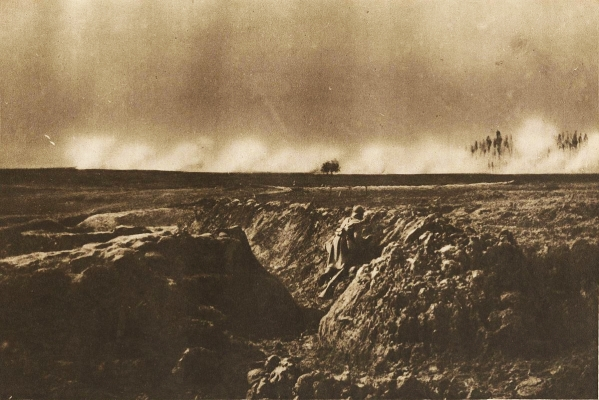

The Last Road Maker (Part 3)
by
James Stoddard
To The Last Road Maker (Part 1)
To The Last Road Maker (Part 2)
Hodgson started awake to the sound of an explosion. Clods of dirt showered down upon him. When it ended, he glanced around and called to Stephens, "Corporal, what's happened?"
From where he and the private crouched behind the hill, the man called back, "Stray shell, sir."
Will pressed closer to the hill, waiting to see if more would follow. Several blasts sounded far behind them, but none came close. The shelling went on for a little over an hour, then ceased. He drifted back into slumber.
Again on the ship, traveling west toward the house. Would he find Bessie there, or would it be Colleen? And if the latter, what would he tell her?
In the early hours before dawn, the ship began to fade. Even as he closed his eyes against the blinding light, he heard the voice of the captain of the phantom vessel, "Wait!"
He turned and tried to look, and as he focused his attention, the light faded. His surroundings lost their ephemeral quality and sharpened once more.
The ghost had pulled itself over the rail. Hodgson lifted his cutlass.
"None o' that, now," the captain said. "I just needs a bit of parley."
Without a word, Will stepped forward and slashed at the specter. The blade caught the creature in the shoulder, and it leapt cursing back into the sea.
As if that had been a signal, cries erupted from high up in the masts, and from all sides of the ship. In the lantern light, Will saw shapes skittering over the riggings, and others sliding over the rail. He could not stand against so many, and he broke into a dead run toward the stern.
When he was nearly there, two pirates wielding dark knives disengaged from the shadows of the Sangier and rushed toward him. He took the first with a neat cut to the head. The second slashed with its knife, a raking blow that caught his biceps; but his blood was up and he did not feel the pain. He jabbed the phantom in the throat and it went down with a gurgling cry.
Other ghosts closed in, but he reached the stern in two strides, threw himself into the captain's cabin, and bolted the door. A dozen ghostly hands hammered against the frame.
He stepped back, his breath rapid, his heart pounding. Dark blood oozed from his wound.
He heard the roar of the captain's voice, and the pounding ceased. A momentary silence fell, broken only by Hodgson's inhalations and the creaking of the timbers.
The full weight of what must have been half-a-dozen of the ghost pirates crashed against the door. It shuddered, but held. Will heard the clatter of feet upon the deck; and the door trembled again. The captain was cursing his crew, urging them on.
At the third hit, the door began to splinter. Hodgson looked around, but there was no way of escape. He could meet the assault best at the doorway, though he could not hold out for long.
Another crash. The door was falling to pieces. He tensed himself for the first stroke.
The top part of the door fell away, and he saw the phantom shapes beyond. Even as they drew back to strike again, the vision faded.
He was in the house once more, standing in the kitchen. He had not returned at the exact moment of his leaving, as was usually the case. The rifle he had taken from the gun-room lay on the table where he had left it.
He heard Colleen's scream and the staccato of running feet. When he turned in the direction of her cry, he saw her rushing up the hall, her face a mask of terror; and behind her came two of the Swine-Things, loping with animal strides.
Snatching up the rifle, he took quick aim, but Colleen was in the way. She came through the doorway, and seeing his pointed weapon, dodged to the left, giving him a clear shot.
His military training served him in good stead, for he hit the first creature square in the center of its chest, and it crumpled to the ground. The second one saw its danger and tried to swerve, but Hodgson took it with a bullet to the head. It fell nearly at his feet and lay bloody and twitching.
"The drawing room!" Colleen shouted. "They came through the side door."
He bolted down the hall, running with all his speed, and arrived breathless and panting at the drawing room. A half-dozen Swine-Things were crossing the threshold into the house. Without pausing to aim, he fired three times in rapid succession, and one of the creatures fell, but the others came at him from two sides, forcing him back down the hall.
Rushing to the kitchen, he found Colleen still there, a shotgun in her hands.
"Run!" he ordered, grasping her arm.
They sped through the house. The grunts of the Swine-Things rose behind them. He glanced back and saw them loping steadily after, almost at his heels.
Sprinting into the main room, they saw more of the beasts at the front door, their faces pressed against the barred windows on either side.
They turned toward the upstairs staircase as their pursuers entered the room. Colleen, who had hunted with her father as a child, raised her shotgun and fired, and the creatures dropped back, howling in pain.
They took the steps two at a time and rushed into the hall. One part of Will's mind remembered that they were going to the very place where they had first met their enemy as children.
With the Swine-Things at their backs, he led them into a bedroom and locked the door.
"I'm sorry, Will!" she cried. "They made me open the door. I was looking at the window and one of them was staring in. I wanted to turn away, but its eyes held me. The next thing I knew I was throwing the bolts. As soon as the door opened, I came to myself."
"I won't let them have you again," he said.
He had chosen this room because long windows covered one wall, but when he looked out, he saw only a sheer drop to the ground, and more of the Swine-Things waiting below.
The doorknob rattled.
"Help us!" Will cried to the heavens. "You helped us before. Please!"
But if the White Circle heard, it did not answer.
There came the noise of claws scratching against the door.
Guns ready, Will and Colleen faced the entrance. Noticing the dried blood on his shirt where the pirate had cut him, Hodgson realized that his question was answered: he could die in this vision. But even that would be all right if he could save Colleen.
And then the scene began to fade.
"No!" Will shouted, dropping his gun and wrapping his arms around her. "Take us both!"
She looked into his face and her eyes were brave and very green. "I love you, Will."
The room fragmented; the light blinded him. When he could see again, he was back in Flanders, and his arms were empty.
He woke to the erratic cadence of a terrific bombardment. The dawn was breaking and the enemy guns were a continuous roar. Corporal Stephens was on the telephone. Private Ridley was at Hodgson's side, holding the field glasses.
His heart leaden, he nonetheless rose with all speed, took the glasses, and ascended the hill, Ridley following.
Even as he made his way, he realized the ghost pirates had defeated him, keeping him on the ship long enough for the Swine-Things to lure Colleen into opening the door.
Lying down, he peered through his glasses at the enemy lines. The German artillery, hidden by distant hills, lit the morning sky. Their guns were shooting long, over the heads of the British trenches, but they would soon get the range.
"Send word back," he ordered the private. "Sector 81 under heavy fire. Assault anticipated." He consulted his compass and gave further coordinates; and Ridley repeated them and scuttled down the hill to the telephone.
Hodgson looked through his glass again, and an exclamation escaped his lip. His mouth went dry. Behind the German lines, unbelievably enormous, loomed a twisted house, built in a circle. He lowered his field-glasses and could see the structure quite easily with his naked eye, though it had not been there before. It seemed to stand above the Huns, like a general guiding its troops, and Hodgson could feel the emanations from it, the pulsing power of its will radiating outward, directing the Germans, feeding them with its malefic energies.
Beyond any doubt, it was Kraighten House, looming many times its original size over the Belgium countryside, a phantom manor standing above the German lines. There was no chance of his going back to rescue Colleen. His heart lay dead within him.
Private Ridley came clambering up the hill and knelt beside Will.
"Do you see that?" Hodgson asked.
Ridley's eyes raked the distant field. "What, sir?"
"That—that structure. That house."
"Where, sir?"
"Right there, man, plain as your nose. Above the German trenches."
The man squinted in an effort to see. "I'm sorry, sir. I don't see anything unusual."
"My mistake," Hodgson lied. "I must have had something in my eye."
Throughout the early morning, the house stood over the battlefield, stretching across the horizon, its doorway beckoning, its lights flickering off and on within it. Clouds were visible behind its translucence, which turned their colors to a pale green. And always the Germans, unaware of its existence, maneuvered beneath it, obeying its directives.
He could not understand. Could an Evil Force be behind the intent of a nation? The Germans weren't a wicked people, despite what the propagandists said. No war was good; yet there were surely just wars. He liked to think the English side was just.
And where are the Forces of Good? he asked the sky. Where were you when I needed you to save Colleen? And if this thing comes against us, who stands for England?
A particularly deafening barrage landed behind the trenches.
". . .you, sir?" a voice said.
"What?" Hodgson turned to Ridley.
"I said, is there anything I can bring you, sir?"
"No, that's all right."
By mid-morning the assault had begun. The Germans charged under cover of the guns, crossing the deadly No Man's Land between the forces, sprinting right into the British rifle-sights, while the English fired from the protection of the trenches. Thousands would die, as they always did in a charge.
The German artillery did not cease as was common in such an attack, but began firing farther behind the British lines. And suddenly the shadow of the house grew long across the battlefield, and Will felt its dreadful malice reaching across the distance, groping for him.
At that moment, he realized it was there to destroy him. He did not know why this should be so, but he felt it with an intuitive certainty. And in the process, the forces controlling the house would not hesitate to cut through the English army, severing it from its supply routes to the sea. It would mean German victory.
He sprinted down the hill and ordered his men to move out. Within moments, they had the gear onto the pack horse and were hurrying away. But they had scarcely left the hill when the German artillery found it. Hodgson glanced back to see it obliterated by the impact of shell after shell.
He led in a zigzag pattern across the landscape, and wherever he turned, the bombardments followed. Nightfall found them ensconced within a deep crater.
"I've never seen the like, sir," Corporal Stephens said. "Shells everywhere we went. You're a good-luck charm to bring us through, and there's no doubt of it."
But Will wondered if he should give himself up to death so the house would leave the battlefield, before whatever power it supplied the Germans resulted in disaster.
He sat down for a moment to rest, and exhaustion caught him before he knew it. But even as he fell asleep, he wondered how he could prevent the ghost pirates from finishing him. At that moment, he did not care if he lived or died. Perhaps better for England if he perished.
He was back in the Sangier's cabin, holding his cutlass, and the door had been nearly torn apart.
"Now I'll have ye," the ghost captain called from the other side of it. "We have the house and we'll take ye, too. Ye'll be well-paid for the stroke ye gave me."
Will blew a ragged breath. This was it. But he would not give up without a battle, and he would try to take the wretched captain with him.
The pirates slammed against the door again, and it fell in with a crash. The phantoms poured through in a rush. Hodgson braced himself for the onslaught.
But no sooner were they within the room than they recoiled, and with shouts of fear, pressed themselves against the wall, trying to force their way back through the doorway.
Looking around in astonishment, Will became aware of a glow overhead. A circle of light, like the one that had protected him as a child, hovered directly above him.
The pirates fled the room. The captain thrust his head through the doorway, cursing, but dared not enter.
But Hodgson had no spirit left for exultation. The only thought that ran over and over through his brain was, You rescued me now. Why couldn't you save her?
He dared not move from the cabin, but remained beneath the White Circle's protection. The hours stretched by; the vision faded.
He walked the gray road above the vast Rift, with Pepper at his side. His previous treks had brought him past the clouds of mist, and the whole canyon lay visible below him. And what he saw made him gape, for in the shadow of the Rift, a hundred yards from where the road ended far below, appeared a house where none had been before, a mansion of enormous proportions. It was much changed, a twisted, gigantic version of Kraighten House, still recognizable only by its unusual gables.
He halted, studying it, and Pepper whined, as if sensing the chill which ran along his neck and arms. Sitting down on the road, he tried to imagine the Night Land as he remembered it from his dreams, the way it had looked through the tremendous telescopes from the apex of the Great Pyramid. He stared across the miles at the place where the Great Bight fell into shadow. The snaking roads built by the Road Makers ended close to where the shadows began. Something about that seemed wrong, but he could not remember why.
He followed the line of the last road past the house, peering into the tremendous shadow cast by the Great Bight. The bottom of the Rift stretched into that gloom, flat and bare save for scattered shrubs and lank trees; and then the ground gave way, descending into a deeper cleft. When the sun was at last extinguished, this would be known as the Great Slope, and would lead through utter darkness to a land of volcanoes and strange vegetation.
He glanced again at the house, and its windows reflected crimson in the red twilight. He measured the distance with his eyes. It was hard to be certain. And yet, if the walled town to the south was indeed the Quiet City. . .
He ran his hands over Pepper's warm coat.
"The House of Silence."
He stood, walking back and forth along the road, staring at the Rift and the house, and perspiration beaded his forehead. Pepper circled him, puzzled by his excitement.
According to the ancient stories of the Last Redoubt, the House of Silence had been built by Gosil, a hero in the age before the Great Pyramid was constructed. Hodgson now saw this was not true. Rather, the wandering tribes of humans, driven to find shelter from the encroaching evils as the sun failed, had found Kraighten House standing upon the plain, and tried to make it their own. But they had not succeeded; the house had proved unsuitable; wasn't that the word the old texts used?
Hodgson grimaced. Unsuitable indeed! A hell-house if ever there was one. And eventually, the terrible forces had taken their home back from humanity.
He left off pacing and began striding back down the road.
At last, after many long hours, he reached the canyon bottom, and there he hesitated, uncertain what to do next. His gaze traveled upward to the walls of rock rising all around him, mile upon mile, their peaks lost among the overhead vapors. He was still miles from the shadow cast by the Great Bight. He saw no sign of another living creature.
He glanced toward the end of the road to the north, where stood the house, with machines scattered around it, and he shuddered as he looked upon it. Could Colleen possibly still be alive, held captive? But if the Swine-Things were there, how could he overcome them alone? He considered the Quiet City to the south. He might find inhabitants there, allies who could help him. But when he left the road to go toward the city, stepping onto the hard ground, Pepper growled behind him. He gave the dog a puzzled look.
Pepper sat on the road, eyes firmly fixed on his master.
"Come on, old boy. Let's see what we can see." Hodgson turned again, expecting the hound to follow, but Pepper began barking and refused to obey.
Hodgson hesitated. Once before he had ignored Pepper's cries of protest, and the dog had been right. How different his life might have been had he followed the counsel of his old friend.
"All right," he said, returning to the road. "Which way do you want to go?"
Pepper rose, wagging his tail, and turned toward the house.
"Apparently one of us knows where he's going."
After long hours, he came to the end of the last road of the Road Makers. It halted in an abrupt smattering of material several furlongs from the house, as if those who made it had been driven off. Paving machines, tall as locomotives, stood quiescent nearby, their silver sides reflecting the light of the red sun. Metal steps led up to the driver's seat, which was open to the air.
He sat on the steps of one of the machines, and Pepper climbed up beside him; and they looked toward the sun which would gutter and die but never set.
He ruffled the dog's ears. "Well, old boy, you brought us here. What now?"
Pepper licked his face and lay down.
"We wait? Is that all you've got?" Hodgson chuckled. "Well, if you're not the most empty-headed captain I ever followed, you're the most reticent."
He looked back to his right, toward the dreaded house, and beyond it to the shadows cast by the Bight; and he thought of the visions of Andros and Naani that had assailed him night after night for an entire year. If the House of Silence stood over there, the Great Pyramid would have been back to the south. It was hard to measure the distances in this light. The road halted half a mile from where the house had appeared. And it ran . . .
He hesitated, realizing what had troubled him before. In Andros and Naani's day, the road had not stopped here, but had circled the House of Silence and run to the edge of the Great Slope. It was as if the Forces of Evil had brought the house through time to prevent the road from being completed.
As if in response to his thoughts, Pepper began frantically barking. Hodgson looked around for signs of danger, but the dog's eyes were fixed on his master.
"What is it, Pepper? What is it, boy?"
The dog sprang up the steps of the machine and bounded back down to Hodgson, then up the steps again, stopping at the top to look over his shoulder.
Hodgson stared at the dog, who whined and barked and tossed his head as if beckoning. After a moment's hesitation, Will ascended and joined his friend. The mechanism was simple enough, little different from that of a motor-car, except it used an azure sphere to control direction. He moved his hands over the sphere, and the machine began a faint hissing and lifted a foot off the ground. Pushing it forward sent a gray material swirling from the nozzles at the back of the machine.
With a whisper, Hodgson ordered the mechanism forward, and it responded, laying the road, continuing the abandoned work.
He laughed grimly. Brought through millions of years to be a construction worker. I could have driven a taxi in London to better purpose.
The machine hovered above the ground, inching its way along. For a long hour, Hodgson drove it, laying the road in a wide line, his eyes fixed on the door of the house, looking for signs of the Swine-Things. Nothing moved around the structure, and the windows stared blind-eyed onto the plain.
Something about the scene was familiar, something about the house and the canyon walls. "God in heaven help me!" he muttered, as he realized what it was. Among the many visions he had seen concerning Kraighten House, one had been of a vast plain bathed in a red, twilight glow, with the house at its center. And above the house, perched on nearly limitless crags, had peered all the old gods of myth—Kali, Seth, Anubis, Chemosh, Dagon—hundreds of them, swine-headed beasts and vulture-headed monsters, dragon forms and animal shapes—some he had recognized and others he had not. All of them eternally watching the house.
He looked upward toward the top of the Rift, hidden scores of miles above him by clouds of mist. Were there carved upon the upper reaches the heads of those vile gods? And if so, what did it mean? Were all the world's forces of darkness focused upon that dreadful manor?
With one hand on the sphere and one hand on his rifle, he shuddered at the awesome Power he faced.
To The Last Roadmaker (Part 4)
© 2011 by James Stoddard.
The image is in the public domain and the photographer is unknown.